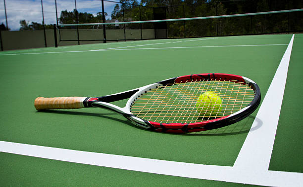

Extracurricular Activities
My Favorite Things To Do Outside of School
During previous years, I had many different extracurricular activities I enjoyed. However, because I am going into high school next year, I decided to focus on only two activities: piano and tennis.
Piano
Piano is the activity that spend the most time on, and I have been playing it for almost 10 years now. I believe piano has helped me learn how to develop and maintain a plan of action, as I had to do so when preparing for recital or competition.
Tennis
This summer, I decided I was going to try out for the tennis team at CCA. So, this year I worked extra hard on tennis to increase my chances of getting on the team. My cummunication and collaboration skills have helped me when playing with a teammate.

Home
My Questions
My Artifacts
Extracurricular Activities
Tech & Engineering